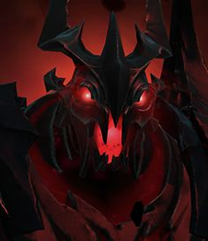
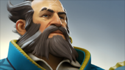
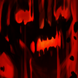
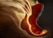
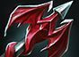

Содержание:
Гайд на Shadow Fiend

Основное
Shadow Fiend, Nevermore, у него много имён - один из самых мощных керри в игре, быстро фармит за счёт койлов и определённых талантов на мс и койлы. Его пассивка отлично подходит для пуша(с талантом), а ульт даёт "страх" который полезен как для атаки, так и для отступления и имеет хороший АоЕ урон. Также, хорош в лейт гейме. Но и недостатков у него много: мало здоровья, брони и самый низкий урон с руки(в начале игры). Поэтому, герой требует ни одного десятка а то и сотни игр, чтобы понимать его силу и потенциал. На 1 уровне имеет: 305 мса, 1 броню и 19-25 урона с руки.
Контрпики
Поскольку герой очень тонкий, его контрят множество персонажей:

Kunkka - герой, который может доставить немало проблем, и легко убить на 6 уровне, харош в плане ластхита и здоровья,
может убить и до 6 уровня, постепенно изводя противника атаками от Tidebringer.

Beastmaster - своим ультом может испортить всю малину, его кабаны дают большое замедление
и также они полезны для
контроля и разбития рун. В битве 1 х 1 у вас практически нет шансов.

Doom - его 3 скилл очень болезненный, поскольку бьёт в процентном соотношении, особенно для SF'а
с его запасом здоровья, но
главная причина почему он контрит SF'а это его ульт, во время которого вы
становитесь грушей для битья.

Huskar - очень неприятный герой во всех стадиях игры. Его сложно убить, особенно если игрок на нём
опытен, и не подставляется
под койлы. Высокий хп реген и большой урон от огненных копей.

Night Stalker - силен в начальной стадии, ночью на линии лучше не показываться, во время
Crippling Fear вы не сможете нажать
ульт, чтобы убежать. Способность Void сбивает тп и замедляет противника, поэтому просто так от него не уйдешь.
Способности
Тактика такова: идем на мид,фармим души, накапливаем урон и уровень - убиваем соло целей. Краткое описание скиллов:

Shadowraze - все три способности Shadowraze связаны и имеют один и тот же уровень. Прокачиваем
его на 1 уровне, без вариантов. Добиваем койлом
дальника и получаем 2 уровень с 1 пачки. Также,
набивая стаки на противнике можно сделать фб на 1 уровне, но для этого нужно чувствовать героя и знать
хватит вам урона для убийства, иначе потеряете все ресурсы впустую. Полезный совет для новичков: очень часто бывают случаи когда койл нужно дать с точки
где герой(по умолчанию) будет разворачиваться в другом направлении, или дать койл с горы или края. В этом вам поможет directional move, с помощью этой опции герой не оббегает препятствия и идет в заданом направлении до конца. Его можно настроить на любую удобную для вас кнопку в настройках.
Управление - Расширеные настройки - Движение в направлении. ( Hotkeys - To advanced hotkeys - Direction move )
Necromastery - "некое подобие ада, но здесь им приходится отдавать свои силы для демона до тех пор, пока кто-то не осмелится освободить их." Качаем на 2
уровне и спокойно фармим крипов на линии, чем больше душ, тем больше урона с руки вы получаете (1/2/3/4 ( 4/5/6/7) ). Для физического билда желательно покупать Aghanim Shard, следующая атака наносит 190% критического урона. Перезарядка 3 секунды. Иллюзии от Manta Style изначально будут иметь 0 душ.
Presence of the Dark Lord - "Невермору необязательно участвовать в бою, чтобы причинять вред. Одно лишь его присутствие заставляет противников
чувствовать слабость." Снижение брони противникам 4/5/6/7 ( 8/9/10/11). С талантом действует на постройки, пассивку видно даже если вы не видны противнику.

Requiem of Souls - "иногда демон сам отпускает души на волю, но только для того, чтобы они сеяли смерть и страх. За свою свободу, они должны заплатить
душами других невинных." Замедляет передвижение врагов и накладывает на них страх, поэтому качают ульту по ситуации, в большинстве случаев её берут
на 9 уровне, но если вам нужно спастить и без ульты не обойтись, то качаем её.
Что качать?
Наш скилл билд будет выглядить примерно вот так:
Выбор талантов делится на два пути: Физический и Магический SF
Для Магического:
- +8% урон от заклинаний
- +100 урона от Shadowraze
- +0,4 сек. страха/замедления за волну Ruquiem of Souls
- -50 сек. перезарядки Requiem of Souls
Для Физического:
Айтем билд
Начальный закуп может быть на выход в ранний ботл или же не такой ранний, а более агрессивный:

- Агрессивный закуп
- Ранний ботл
В не зависимости какой закуп из вышеперечисленных взяли, берём следущее:

и если нужно
Начальные предметы для хилла
Далее, мы апгрейдим наш ботинок:

или
Если идем в физического SFа, то Power Treads, если хорошо отстояли линию берем травела и наводим шуматоху на карте и сноуболлимся.
Далее перечислены айтемы которые хороши в той или иной ситуациях:

Dragon Lance - в основном берут для начальных статов, жира и дальности атаки, так будет приятнее пушить и держать расстояние между вами и
противником. В дальнейшем можно апгрейднуть до Hurricane Pike.
Manta Style - собирают 1 или 2 предметом, дает скорость передвижения, начальный урон, полезен для пуша и прерывания некоторых дизейблов, доджа
станов и т.д. Также, если вам не лень контролить каждую иллюзию, вы можете забайтить противника на важные кнопки.
Shadow Blade - довольно универсальный предмет на любого героя, начальный урон, дает возможность приблизиться к врагам и использовать ульт
прям под ним(ними), особенно полезен на более низких рейтингах. В дальнейшем можно апрейднуть до Silver Edge.
Monkey King bar - зачастую берут против героев с миссами или айтемами с ними. Дают допольнительную скорость атаки что тоже очень полезно.
Shiva's Guard - для доп. брони и комбинирования шивы с ультимейтом.
Scythe of Vyse - очень полезный предмет, который стоит брать в 70% игр, если у вашей тимы нет нужного контроля, не имеет значения какой билд.
Linken's Sphere - позволяет избежать очень страшных для вас кнопок, таких как Finger of Death, Reaper Scythe, Doom от которых, без линки, ты
скорее всего умрешь.

Eye of Skadi - имеет все орб эффекты и полезен против героев, которые имеют высокий хп-реген, против них он особенно полезен, дает плотность и
большой запас здоровья, хорошо сочетаеться с Satanic и Sange & Yasha.
Разные сборки


Что делать по игре
Как уже говорилось ранее, задача СФа выфармить нужные айтемы и убивать соло цели. Сначала, фармим на линии и стараемся никуда не выходить до
травелов/юлов/шб или хотябы 8-10 уровня, паралельно с линией фармим лес, это нам позволяют койлы. Желательно гангать вражеского кора - это самая приоритетная цель. В тим файтах, заходим за спину и кастуем ульт затем добиваем врагов койлами или с руки, в лейте может влетать в самый центр замеса
и с помощью бкб и shadow blade/blink dagger кастовать ульт и добивать койлами( магический ) или с руки ( физический ). Если нету бкб желательно кастовать
ульт в кустах или за деревьями, если выпадает редкий случай когда в пике вообще нет станов или все кнопки нажали можно смело влетать во врагов. Всего описать невозможно, это все приходит с опытом, знать как и куда влетать, расстояние койлов, это приходит со временем. Поэтому новичкам будет по началу очень сложно играть на этом герое.
Итог
Герой с очень низким начальным уроном, низким здоровьем, но имеет хорошую скорость атаки и анимацию удара. Мало брони, но большой прирост интелекта, главное оружие - Shadowraze. Shadow Fiend требует понимания игры, знание таймингов, расстояния способностей и тонкостей героя. Герой, который в опытных руках будет уничтожать всех и вся на своем пути. На этом пожалуй всё, удачных игр!